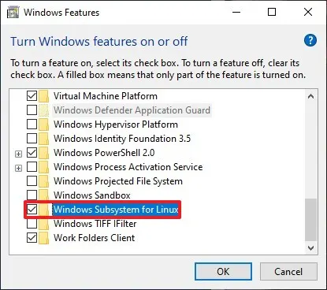
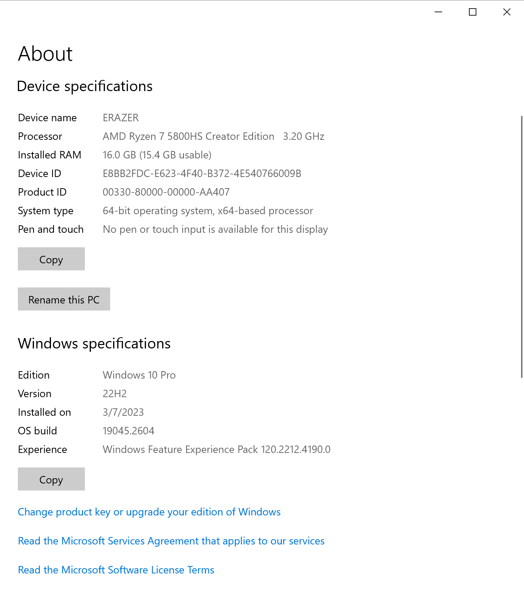
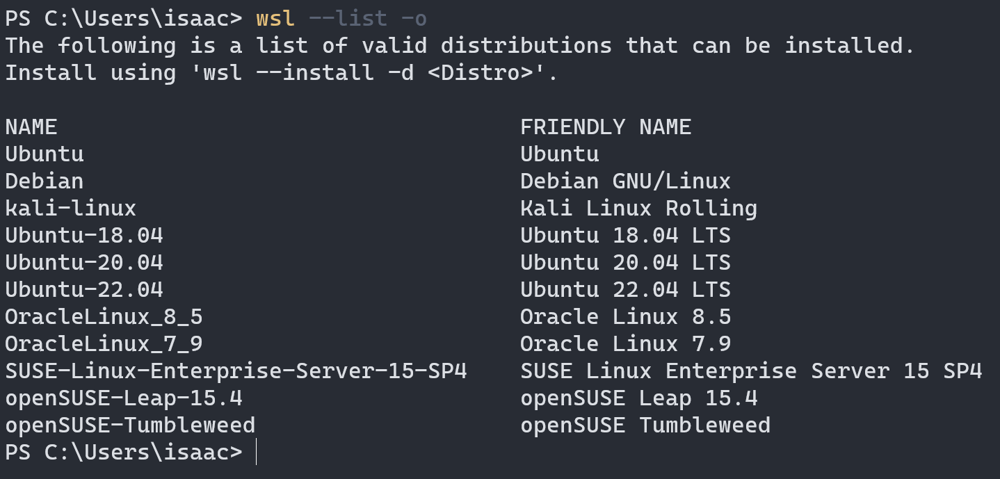
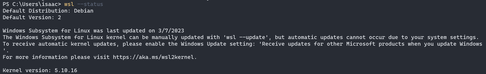
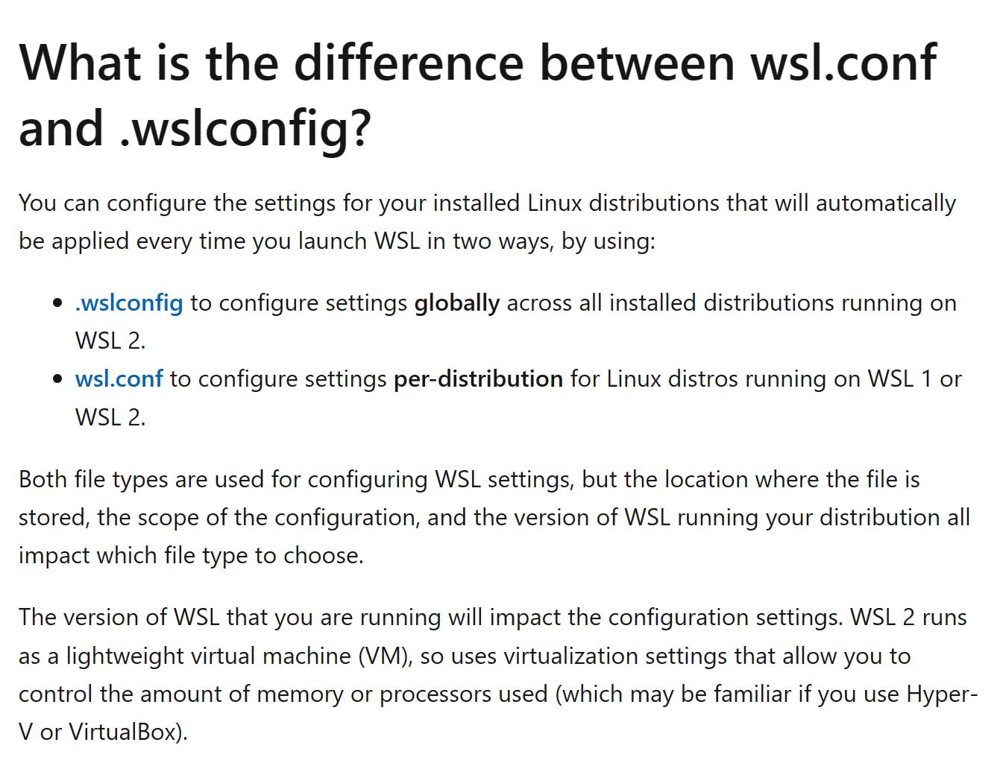

初识WSL2
前言
本文旨在记录WSL2的安装，让WSL基本可用。
接着是Linux发行版本的替换，以至于可以自由选择自己熟悉、喜欢的distribution。
最后，是有选择地介绍WSL的基础配置及其略详细的情况，目的是让WSL可以更加适合开发者使用。如果后面有需要会继续补充常用的配置使用。以及linux发行版本的替换。
安装
本节将介绍安装WSL2的系统要求以及笔者的安装环境。笔者将在比较新的windows 10环境下，使用命令行安装，并且详细记录安装细节。
系统要求
安装要求是指可以安装WSL2的windows 版本。它们分为最方便的安装要求和最低的要求，前者可以直接使用命令行安装，后者需要做一些windows功能的开启，官方的详细要求可参考 附录-Prerequisites。
最方便的要求
与下面这个本版下相同或者更高：
window 10
- 版本：2004
- OS Build：19041
最低版本
最低版本的要求根据x64版本和ARM64版本有所不同。具体如下
x64版本：
- window 10
- 版本：1903
- OS Build：18362
ARM64版本：
- window 10
- 版本：2004
- OS Build：19041
在符合以上要求的情况下，还需要已经安装WSL1！
安装WSL1，需要以下几个操作：
- 启用wsl功能；
- 启用虚拟机平台；
启用wsl功能
还需要在控制面版 > windows > 功能开关，勾选打开 wsl 选项，见下图：

然后，重启电脑。
启用虚拟机平台
以管理员权限打开powershell执行下面命令：
1 | Enable-WindowsOptionalFeature -Online -FeatureName VirtualMachinePlatform |
然后，重启电脑。
到此，旧版本的准备已经完成。
实践环境
笔者当前的环境是比较新的环境。适合使用命令行直接安装WSL2。环境细节见下图：
|  |
|---|
命令行安装
打开 powershell，使用以下命令安装，等待完成。
1 | wsl --install |
安装结束后，可以使用 wsl --help 查看支持的命令，详细参考 附录-wsl –help。
然后，使用 wsl --status 确认当前的 WSL 版本。
1 | PS C:\Users\isaac> wsl --status |
如果不是 Default Version: 2 的话，使用 wsl --set-default-version 2 修改。
–set-default-version
Changes the default install version for new distributions.旧版本windows安装WSL2
旧版本的详情可以查看 最低版本。已经做好准备后，还需要做下面几步：
设置WSL版本：
wsl --set-default-version 2修改linux distributions
WSL默认安装的Linux发行版本是 Ubantu。当前WSL支持的Linux发行版本可查看 附录-WSL支持的Linux发行版本。以下以切换 Debian 作为例子：
打开 powershell，使用
wsl --list -o查看当前支持的发行版本：
见上图提示，使用
wsl --install -d <Distro>安装。
安装完成后，设置WSL默认的发行版本：
设置完成后，可以使用
wsl --status查看。
添加配置
下面要介绍的是使用配置文件进行配置。
WSL的配置文件有2个，分别是
wsl.conf和.wslconfig。接下来要介绍的是：
- 两种配置文件的异同；
- 配置文件的存放位置。
在配置完成之后，需要重启WSL才会生效。注意不是单纯关闭 Terminal。
You must wait until the subsystem running your Linux distribution completely stops running and restarts for configuration setting updates to appear. This typically takes about 8 seconds after closing ALL instances of the distribution shell.
配置文件的异同
两个文件都是WSL的配置文件，它们区别在于存储的位置、生效的范围、配置的选项。
wsl.conf是WSL1时已经有的配置文件。它可以在WSL1和WSL2版本下生效。但是它可以配置的属性有效，比如要配置WSL的内存占用则只能通过.wslconfig文件进行配置。
.wslconfig是WSL2的配置文件，它仅仅在WSL2版本环境下生效。
存放位置
配置文件不是自动生成的，如果是第一次配置，需要手动创建对应的配置文件。如果没有配置文件存在即使用默认配置。
wsl.conf：/etc/wsl.conf
.wslconfig:C:\Users\<UserName>\.wslconfig特性
systemd命令的支持
默认不支持，需要在配置文件中开启
2
3
systemd
Trying to run as user instance, but the system has not been booted with systemd.配置文件中添加以下配置，重启后生效：
2
systemd=true重启后可以使用
systemctl list-unit-files --type=service检查。Automount settings
自动挂载设置，以及options的释义，参考：https://learn.microsoft.com/en-us/windows/wsl/wsl-config#automount-settings
其中涉及的概念：
uid=1000，参考附录中的 What is Umask in Linux?
umask，参考附录中的 What is Umask in Linux?
栗子：umask=022，则意味新建的目录与文件的权限将是
77 - 022 = 755附录
特别说明
Advanced settings configuration in WSL 中包含了 wsl.conf 和 .wslconfig的示例文件；
wsl –help
2
3
4
5
6
7
8
9
10
11
12
13
14
15
16
17
18
19
20
21
22
23
24
25
26
27
28
29
30
31
32
33
34
35
36
37
38
39
40
41
42
43
44
45
46
47
48
49
50
51
52
53
54
55
56
57
58
59
60
61
62
63
64
65
66
67
68
69
70
71
72
73
74
75
76
77
78
79
80
81
82
83
84
85
86
87
88
89
90
91
92
93
94
95
96
97
98
99
100
101
102
103
104
105
106
107
108
109
110
111
112
113
114
115
116
117
Copyright (c) Microsoft Corporation. All rights reserved.
Usage: wsl.exe [Argument] [Options...] [CommandLine]
Arguments for running Linux binaries:
If no command line is provided, wsl.exe launches the default shell.
--exec, -e <CommandLine>
Execute the specified command without using the default Linux shell.
--
Pass the remaining command line as is.
Options:
--cd <Directory>
Sets the specified directory as the current working directory.
If ~ is used the Linux user's home path will be used. If the path begins
with a / character, it will be interpreted as an absolute Linux path.
Otherwise, the value must be an absolute Windows path.
--distribution, -d <Distro>
Run the specified distribution.
--user, -u <UserName>
Run as the specified user.
Arguments for managing Windows Subsystem for Linux:
--help
Display usage information.
--install [Options]
Install additional Windows Subsystem for Linux distributions.
For a list of valid distributions, use 'wsl --list --online'.
Options:
--distribution, -d [Argument]
Downloads and installs a distribution by name.
Arguments:
A valid distribution name (not case sensitive).
Examples:
wsl --install -d Ubuntu
wsl --install --distribution Debian
--set-default-version <Version>
Changes the default install version for new distributions.
--shutdown
Immediately terminates all running distributions and the WSL 2
lightweight utility virtual machine.
--status
Show the status of Windows Subsystem for Linux.
--update [Options]
If no options are specified, the WSL 2 kernel will be updated
to the latest version.
Options:
--rollback
Revert to the previous version of the WSL 2 kernel.
--inbox
Only update the inbox WSL 2 kernel. Do not install WSL from the Microsoft Store.
--web-download
Download the most recent version of WSL from the internet instead of the Microsoft Store.
Arguments for managing distributions in Windows Subsystem for Linux:
--export <Distro> <FileName>
Exports the distribution to a tar file.
The filename can be - for standard output.
--import <Distro> <InstallLocation> <FileName> [Options]
Imports the specified tar file as a new distribution.
The filename can be - for standard input.
Options:
--version <Version>
Specifies the version to use for the new distribution.
--list, -l [Options]
Lists distributions.
Options:
--all
List all distributions, including distributions that are
currently being installed or uninstalled.
--running
List only distributions that are currently running.
--quiet, -q
Only show distribution names.
--verbose, -v
Show detailed information about all distributions.
--online, -o
Displays a list of available distributions for install with 'wsl --install'.
--set-default, -s <Distro>
Sets the distribution as the default.
--set-version <Distro> <Version>
Changes the version of the specified distribution.
--terminate, -t <Distro>
Terminates the specified distribution.
--unregister <Distro>
Unregisters the distribution and deletes the root filesystem.WSL支持的Linux发行版本
详细参考：#downloading-distributions
PS:以下数据记录于 2023/03/12
- Ubuntu
- Ubuntu 22.04 LTS
- Ubuntu 20.04
- Ubuntu 20.04 ARM
- Ubuntu 18.04
- Ubuntu 18.04 ARM
- Ubuntu 16.04
- Debian GNU/Linux
- Kali Linux
- SUSE Linux Enterprise Server 12
- SUSE Linux Enterprise Server 15 SP2
- SUSE Linux Enterprise Server 15 SP3
- openSUSE Tumbleweed
- openSUSE Leap 15.3
- openSUSE Leap 15.2
- Oracle Linux 8.5
- Oracle Linux 7.9
- Fedora Remix for WSL
另外，可以通过 powershell，使用
wsl --list -o查阅当前WSL支持的Linux发行版本。Prerequisites
以下是官方的安装要求
新版本：
详细参考：Install Linux on Windows with WSL - Prerequisites
Prerequisites
You must be running Windows 10 version 2004 and higher (Build 19041 and higher) or Windows 11 to use the commands below. If you are on earlier versions please see the manual install page.旧版本
详细参考：Check requirements for running WSL 2
To update to WSL 2, you must be running Windows 10…
For x64 systems: Version 1903 or later, with Build 18362 or later.
For ARM64 systems: Version 2004 or later, with Build 19041 or later.
参考
安装
其他